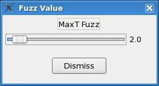

Color Table Editor
The Color Table Editor allows the user to create new and modify existing color enhancement curves for various scalar and vector weather elements. For details on how to use the color table editor, see the Color Table Editor Dialog documentation.